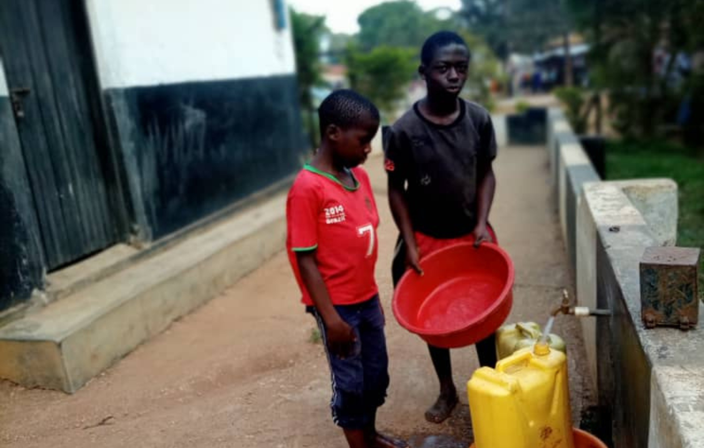

"Thousands of children in Uganda become orphans after the death of there parents leaving them in gaps of limited accessibility to quality education, clothing and shelter. Help us to make there lives cheerful."
Uganda is one of the poorest countries in Africa, with a long history of political turmoil, human rights abuse and economic strife. Added to this dangerous mix has been the continuous spread of HIV/AIDS, as well as various other contagious deadly diseases such as the Cholera, Typhoid, Polio, Measles, Covid-19 and periodic influxes of refugees across Africa. The continual onslaught of all these disasters has left an even bigger tragedy in their wake: thousands of orphans abandoned to survive on their own.
Picture Caption: (L)Marison Miller from USA during her volunteership in 2019. (R) Ayesiza Christine who happens to be the Administrator at Siloam Pool Ministrie
These innocent victims are often preyed upon by adults and forced to work as unpaid house maids, evolution into thieves and even prostitutes.

OUR BACKGROUND
We are a registered non profit, non Governmental, Non racism, Non religious Commmunity based organization 6828 under Siloam Pool Ministries.
Ddembelayabato was founded by Siloam Pool Ministries with a group of six women and four men with a major focus of :
OUR FOUNDATION.
Ddembelayabato orphanage project was built from the core principles of fearing God. The children are raised with the core principles of praising, worshipping and praying to God.
OUR MISSION.
To impact the lives of orphaned children (boys and girls) and women through a project based approach.
OUR IMPACT.
Since our establishment, with the help and donations of various groups of people in the society, we have managed to provide a home and education to over 251 total orphans. While some are nolonger with us, we are proud to have impacted them.
OUR VISION.
An equal opportunity environment where orphaned children can grow from and experience natural love, opportunities, emotional and spritual support like other previlaged children.
DONATE NOW
Option 1 (GoFundMe)
Donate via GoFundMe
Option 2 (Bank Transfer Details)